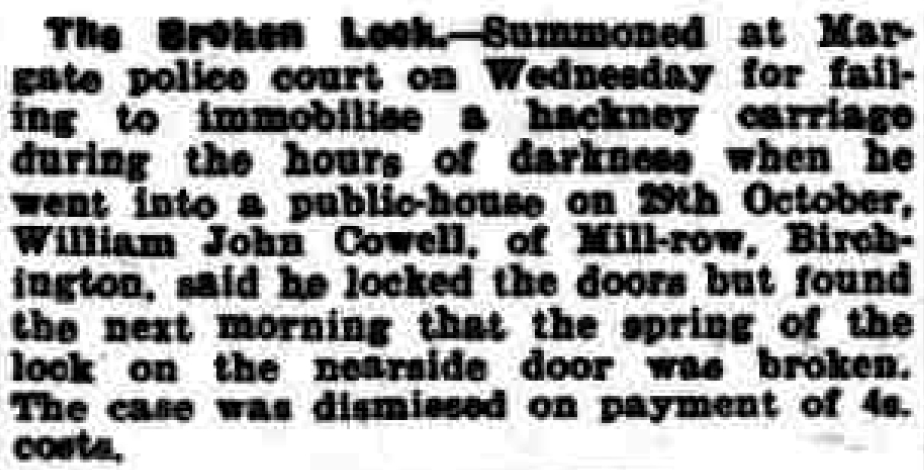
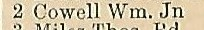
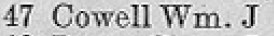
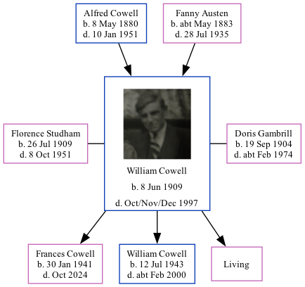

William John Cowell 1909 - 1997
[ Home ] | [ Calendar ] | [ Surnames Index ] | [ Family History ]A coal agricultural merchants truck driver and the son of Alfred Cowell (a transport driver) and Fanny Austen, William Cowell, the first cousin once-removed on the mother's side of <a href="I1.html">Nigel Horne</a>, was born in Upper Stourmouth, Kent, England on Jun 8, 1909<span class="citation">1,2,3,4,5,6</span>, was baptized in West Stourmouth, Kent, England on Jul 11, 1909 was married twice - to Florence Studham (<i>c.</i> Aug 1931 in Thanet, Kent, England) Doris Gambrill (<i>c.</i> Aug 1953 in Thanet, following the death of Florence May on Oct 8, 1951)<span class="citation">7</span>. He had 3 children with Florence Studham: Frances M, William Albert John and Ellen.</p><p>William spent all of his life in Kent, England. Throughout his life, he lived in several places around the county: at his birthplace on Apr 2, 1911<span class="citation">10</span>; at Durlock Farm Cottages, Minster in Thanet on Jun 19, 1921<span class="citation">2</span>; at 2 Mill Row, Birchington in 1936<span class="citation">8</span> and on Sep 29, 1939<span class="citation">3</span>; at Mill Row, Birchington in 1941; and at 47 Park Lane, Birchington in 1955<span class="citation">9</span>. <p>He died in Oct/nov/dec 1997 in Thanet<span class="citation">5</span>.
Parents
- Alfred John was born on May 8, 1880
- Fanny was born c. May 1883
Children
- Frances M was born on Jan 30, 1941
- William Albert John was born on Jul 12, 1943
Citations
- 1911 England Census Online publication - Provo, UT, USA: Ancestry.com Operations, Inc., 2011.Original data - Census Returns of England and Wales, 1911. Kew, Surrey, England: The National Archives of the UK (TNA), 1911. Data imaged from the National Archives, London, England.
- 1921 Census Of England & Wales - Findmypast (was age 12 and the son of the head of the household)
- 1939 Register - Findmypast (was the head of the household)
- England & Wales deaths 1837-2007 - Findmypast
- England & Wales, Death Index: 1984-2005 Online publication - Provo, UT, USA: The Generations Network, Inc., 2007.Original data - General Register Office. England and Wales Civil Registration Indexes. London, England: General Register Office. © Crown copyright. Published by permission of the Cont
- England & Wales, FreeBMD Birth Index, 1837-1915 Online publication - Provo, UT, USA: The Generations Network, Inc., 2006.Original data - General Register Office. England and Wales Civil Registration Indexes. London, England: General Register Office. © Crown copyright. Published by permission of the Cont
- England & Wales, Marriage Index: 1916-2005 Online publication - Provo, UT, USA: The Generations Network, Inc., 2009.Original data - General Register Office. England and Wales Civil Registration Indexes. London, England: General Register Office. © Crown copyright. Published by permission of the Cont
- 1936 Isle of Thanet Kelly's Directory
- 1955 Kelly's Thanet Directory
- 1911 Census for England & Wales - Findmypast (was age 1 and the son of the head of the household)
Media
William Cowell
Thanet Advertiser 18 Nov 1941

1936 Isle of Thanet Kelly's Directory

1955 Kelly's Thanet Directory

England & Wales deaths 1837-2007 Transcription - BMD-D-1997-12-81851017
1939 Register Transcription - TNA-R39-1751-1751G-020-35
1911 England, Wales & Scotland Census Transcription - GBC-1911-RG14-04559-0401-3
England & Wales marriages 1837-2008 - BMD/M/1953/3/AZ/000341/005
England & Wales marriages 1837-2008 Transcription - BMD-M-1931-3-AZ-000298-024
Kent Baptisms - GBPRS/CANT/B/96716786
Family Tree
Generated by Ged2Site. Last updated on Jul 20, 2025